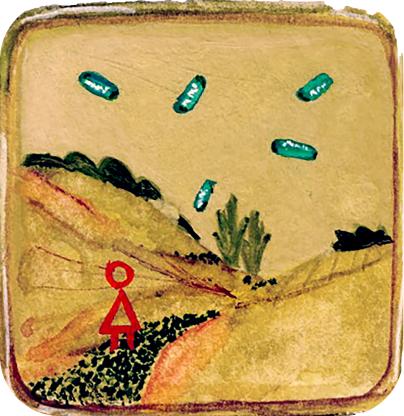

2D Media
overview
my background in art
As an undergraduate Art major Carnegie Mellon, I explored an array of mediums, including 2D media.
Art was a huge part of my life growing up, and I spent a lot of my time drawing and painting. When I went to CMU, my focus shifted to interactive and computational art. While taking computer science and new media classes, I still continued to explore traditional 2D media. Though I have found UI/UX design to be a better fit for me as a career, today I still try to keep up my art practice.
Below are some of the explorations I did in 2D media during the time I was an undergraduate.
photography


painting
2018. Guoache on paper. 1.5” x 1.5”

2018. Guoache on paper. 4” x 4”
Sidenote: This painting inspired the coded waves on my homepage~

2018. Guoache on paper. 3” x 4.5”
coded sketches

Cramp. 2019. Coded with p5.js
Check out the interactive sketch here.

Searching. 2018
Check out the interactive sketch here (Currently only working on desktop).
Waves. 2019. Coded with p5.js
Check out the interactive sketch here.
Interested in using this as your new tab screen?
Get the redirect chrome extension and set aridaly.com/waves as the redirect link.